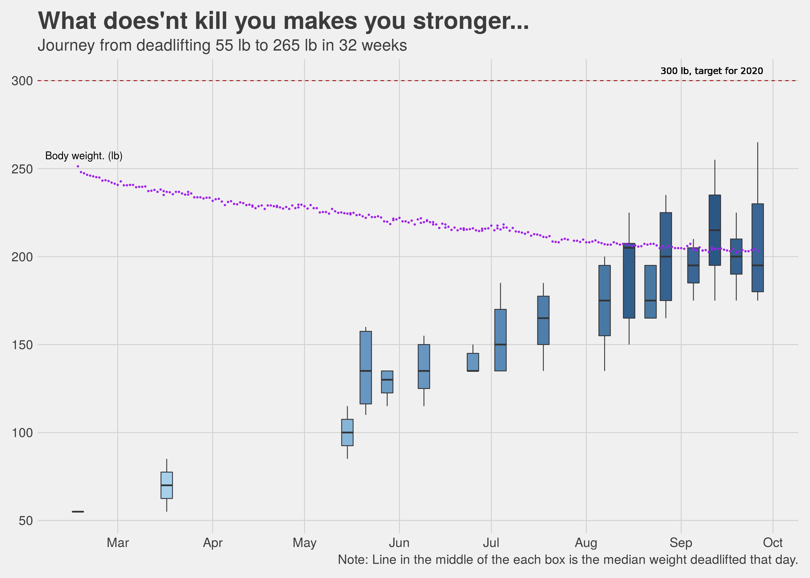

Chapter 5 What did we accomplish?
I have said this earlier in this book, my initial goal for meeting with a trainer and going to the gym was to lose weight, but as we started sweating it out I realized that we were getting a lot more out of this exercise and clean eating regimen than just a lighter body. Even so, weight loss and overall getting the bad in a better shape are important goals, so how did we fare on these?
| Important Metrics | ||
|---|---|---|
| Key data points that describe the journey | ||
| Metric | Amit | Nidhi |
| Days since start | 204 | 204 |
| Days taken to lose last 10 pounds | 56 | 84 |
| Starting Weight (lb) | 251.33 | 151.9 |
| Current Weight (lb) | 203.49 | 130.07 |
| Total weight loss (lb) | 47.841 | 21.832 |
| Best Weight loss month | May, 8.38 lb | NA |
| Source: Daily measurements done @home | ||
|
1
19.03% of the starting body weight.
2
14.37% of the starting body weight.
|
||
So net-net in about 7 months, I lost about 20% of my body weight and Nidhi lost about 15%. Not too bad. In terms of how far we have progressed compared to the goals we started with, I have some more miles to go while Nidhi is almost there.
